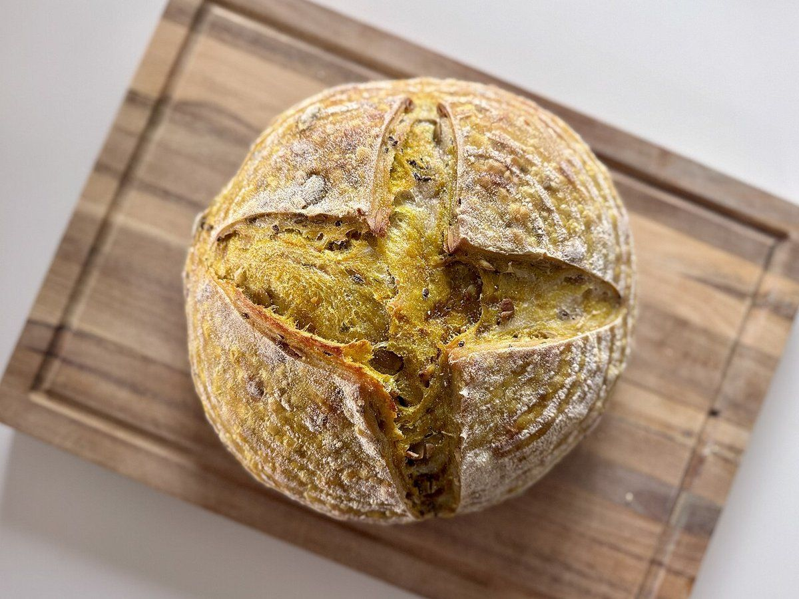
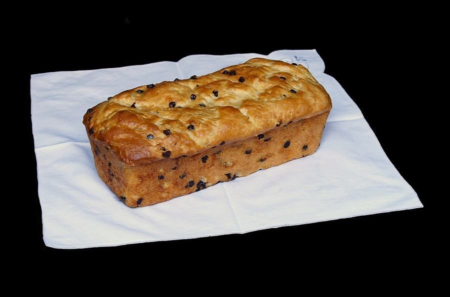
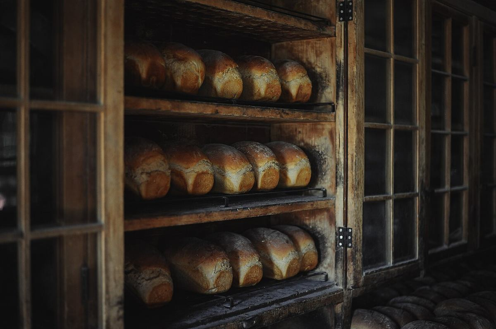
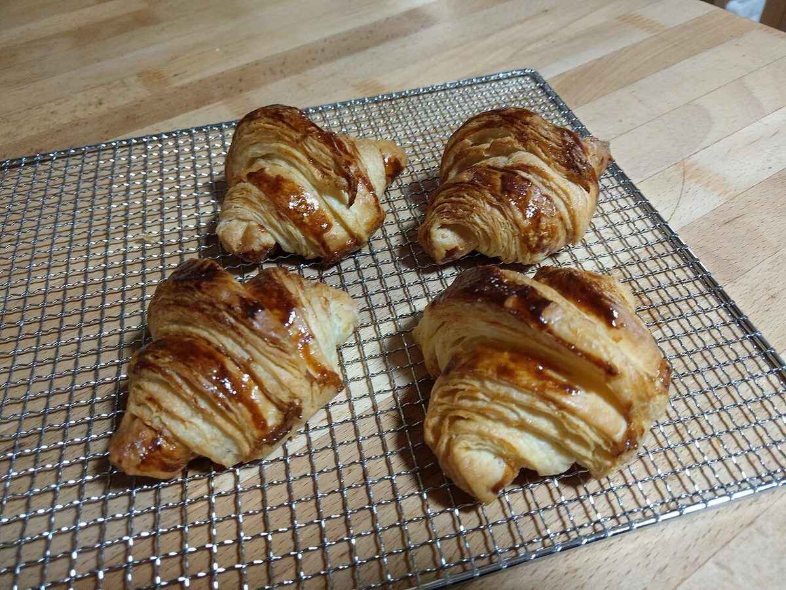

01 YEAST
天然酵母で、じっくり。
自家製の酵母で、ゆっくり発酵させます。小麦の甘みと、香ばしい皮が特長です。(見本の文章です)
02 OVEN
石窯で、焼く。

薪の火の遠赤外線で、中はしっとり、外は香ばしく焼き上げます。
03 DAILY
毎日、食べたいパン。

特別な日より、いつもの朝のために。毎日食べても飽きない、やさしい味をめざしています。
写真・店舗名・内容はすべて見本用の架空のものです
Boulangerie Komugi
石窯で焼く、毎日食べたいパン。
ご挨拶
住宅街の角にある、小さなパン屋です。毎朝4時から仕込んで、7時半にお店を開けます。
天然酵母の食パンやハード系、子どもにも人気の甘いパンまで、日替わりで30種類ほど焼いています。
おすすめ

じっくり発酵させた、香ばしい丸パン。
¥780朝食にもお弁当にも。人気No.1。
¥130
バターたっぷりのしっとり生地。
¥480GALLERY





01 YEAST
自家製の酵母で、ゆっくり発酵させます。小麦の甘みと、香ばしい皮が特長です。(見本の文章です)
02 OVEN
薪の火の遠赤外線で、中はしっとり、外は香ばしく焼き上げます。
03 DAILY
特別な日より、いつもの朝のために。毎日食べても飽きない、やさしい味をめざしています。
VOICE
「カンパーニュが香ばしくて、毎週買いに行っています。」
40代・女性(イメージ例)「ロールパンがふわふわで、子どもが大好きです。」
30代・男性(イメージ例)「朝いちばんに行くと、焼きたてが買えて幸せです。」
20代・女性(イメージ例)ACCESS
お問い合わせ
000-0000-0000